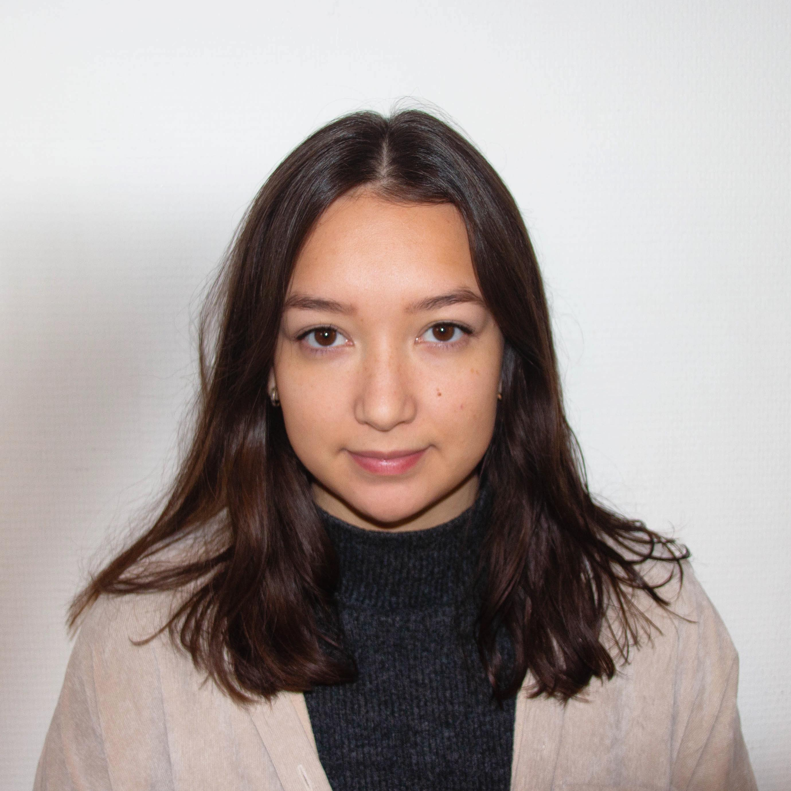

I'm 22, I live in Paris and I'm studying my last year in Master of Science 2 specialized in International Marketing and Brand Management at Kedge Business School Paris. Here you will discover my experiences through my website I've created following Le Wagon courses.
Discover My LinkedInI am currently looking for a 6 months internship starting from September 2021. I'm motivated working as a junior product manager, junior product owner or junior marketing manager. I'm ready to challenge myself and to work within a company that has a willingness to innovate and develop projects in an agile environment.